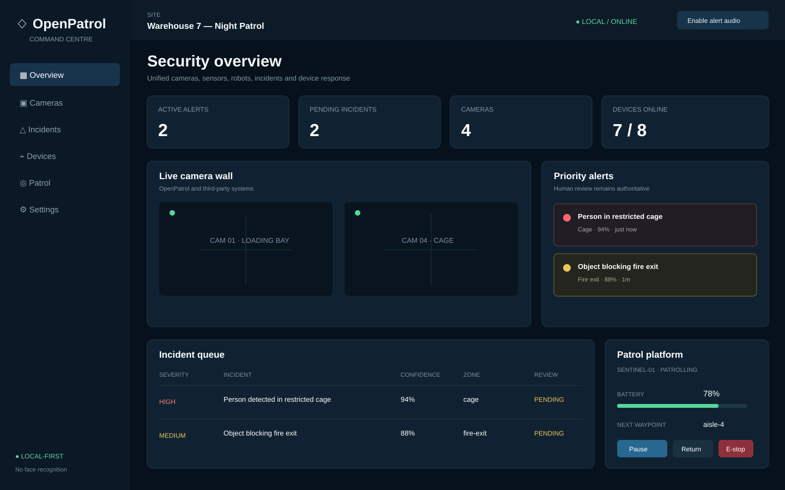
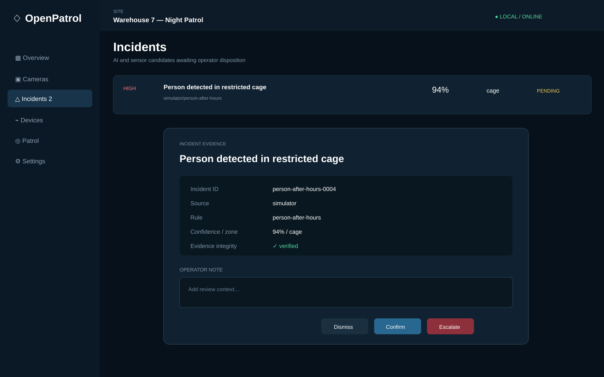
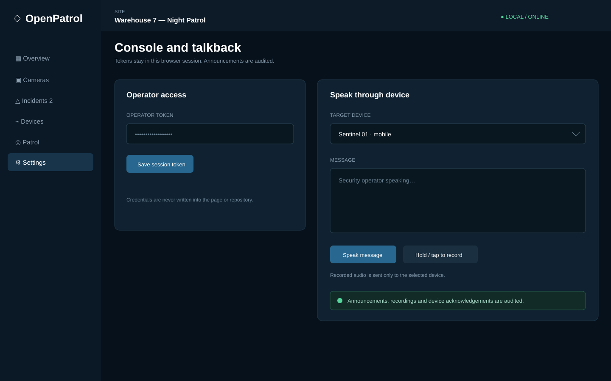

Unify existing systems
Ingest RTSP/ONVIF-compatible camera paths, Frigate, MQTT, NDJSON, alarm, access and authenticated generic events.
OpenPatrol brings existing cameras, alarms, access systems, fixed sensors, patrol robots and drones into one local-first command centre—without locking the site to one hardware vendor.
 REV-A VISUALISATIONDIGITAL PROTOTYPE
REV-A VISUALISATIONDIGITAL PROTOTYPEOpenPatrol is designed for warehouses, campuses, industrial facilities, gated communities and other sites where security technology has accumulated in disconnected islands.
Ingest RTSP/ONVIF-compatible camera paths, Frigate, MQTT, NDJSON, alarm, access and authenticated generic events.
Fuse weak observations into explainable candidates for falls, intrusion, fights, distress, fire, panic, tamper and sudden movement.
Route browser alerts, audio, strobes, sirens, recorded announcements and operator talkback—with evidence and an audit trail.
Coordinate ROS 2 ground platforms and an autopilot-bounded aerial platform through the same supervised workflow.
The included command centre covers site overview, incident evidence review and audited response. These are source-faithful demo captures using the bundled warehouse scenario.



It is not a cheaper clone of a field-proven robot. It is an open integration and engineering starting point for teams that want to own the stack.
| Published capability | OpenPatrol | Frigate | Knightscope K5 | Asylon platform |
|---|---|---|---|---|
| Primary role | Multi-system coordination | Local AI NVR | Managed security robot | Managed ground + aerial security |
| Open source / inspectable build files | Yes | Software | No | No |
| Local-first camera analytics path | Yes, via adapters | Yes | Vendor platform | Vendor platform |
| Camera, alarm, access and sensor fusion | Included contracts | Camera-centric | Vendor integrations | Vendor integrations |
| Ground robot + drone in one workflow | Reference designs | No | Ground portfolio | Yes |
| Editable robot CAD, BOM and firmware | Included | Not applicable | No | No |
| Physical field validation | Not yet | Software deployments | Commercially deployed | Commercially deployed |
Comparison reflects public product documentation checked 3 August 2026. Sources: Frigate, Knightscope, Asylon DroneDog and Guardian. “Included” describes repository scope, not field performance.
Product visualisations communicate the family; controlled dimensions trace to locked Rev-A schedules and editable OpenSCAD sources.


Rover One, Sentinel and the four-rotor AirScout extend the same operator-controlled incident workflow beyond fixed cameras.

Indicative component BOM—not a retail price or fabrication quote. USD equivalents use ₹95.13 per US$ on 3 August 2026.
Excludes labour, tax, shipping, tooling, integration, validation, certification and third-party equipment. Exchange-rate reference: Reuters, 3 August 2026.
Start by quoting the metal, polymer and composite parts. Then use a local mechatronics integrator for assembly, wiring, calibration and acceptance testing.
Python 3.11+. The lightweight command-centre demo has no third-party runtime dependency.
Full setup and integrations →# install from GitHub
pipx install git+https://github.com/eyeinthesky6/openpatrol.git
# launch the bundled scenario
openpatrol
# open http://127.0.0.1:8765OpenPatrol began with a simple question: why should a site need separate, closed consoles for cameras, alarms, sensors, robots and drones? Rev-A explores an open coordination layer and a family of low-cost reference devices that teams can inspect, simulate and adapt.
The project deliberately keeps humans responsible for consequential actions and treats certified life-safety systems as independent—not replaceable.
Software, simulation, firmware interfaces, parametric CAD, BOMs, wiring guidance and Rev-A specifications are complete enough for a digital prototype release. Fabrication, real-camera calibration, endurance testing and certification remain a future physical-validation phase.
OpenPatrol creates incident candidates; it does not guarantee detection. Certified fire, pool, medical and access systems remain independently operational.